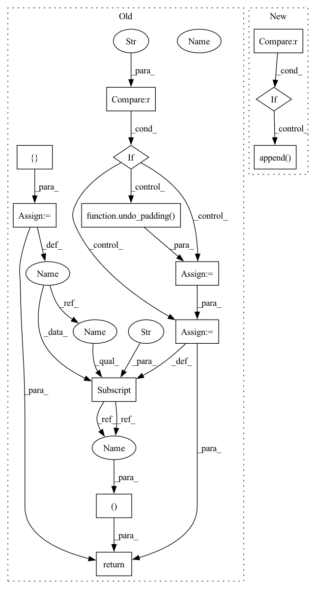

Pattern ID :38209

Before Change
loss_seq = params.seq_cost(p_seq, phns_with_eos, length=rel_length)
loss = params.ctc_weight * loss_ctc + (1 - params.ctc_weight) * loss_seq
stats = {}
if stage != "train":
ind2lab = params.train_loader.label_dict["phn"]["index2lab"]
sequence = convert_index_to_lab(hyps, ind2lab)
phns = undo_padding(phns, phn_lens)
phns = convert_index_to_lab(phns, ind2lab)
per_stats = edit_distance.wer_details_for_batch(
ids, phns, sequence, compute_alignments=True
)
stats["PER"] = per_stats
return loss, stats
def fit_batch(self, batch):
inputs, targets = batch
predictions = self.compute_forward(inputs, targets)
After Change
// Record losses for posterity
self.ctc_metrics.append(ids, p_ctc, phns, wav_lens, phn_lens)
self.seq_metrics.append(ids, p_seq, phns_with_eos, rel_length)
if stage != sb.Stage.TRAIN:
self.per_metrics.append(ids, hyps, phns, phn_lens, self.ind2lab)
return loss
def fit_batch(self, batch):
In pattern: SUPERPATTERN
Frequency: 3
Non-data size: 13
Instances
Fragment ID: 109467462
Project Name: speechbrain/speechbrain
Commit Name: 530a3c9f6e2f4cd6f5ada9f814f426b6686d2aa0
Time: 2020-09-01
Author: plantinga.peter@protonmail.com
File Name: recipes/TIMIT/ASR_seq2seq/experiment.py
M Class Name: ASR
N Class Name: ASR
M Method Name: compute_objectives(4)
N Method Name: compute_objectives(4)
M Parent Class: sb.Brain
N Parent Class: sb.core.Brain
M File Name: recipes/TIMIT/ASR_seq2seq/experiment.py
N File Name: recipes/TIMIT/ASR_seq2seq/experiment.py
M Start Line: 111
M End Line: 148
N Start Line: 55
N End Line: 88
'>
Before Change
loss_seq = params.seq_cost(p_seq, phns_with_eos, length=rel_length)
loss = params.ctc_weight * loss_ctc + (1 - params.ctc_weight) * loss_seq
stats = {}
if stage != "train":
ind2lab = params.train_loader.label_dict["phn"]["index2lab"]
sequence = convert_index_to_lab(hyps, ind2lab)
phns = undo_padding(phns, phn_lens)
phns = convert_index_to_lab(phns, ind2lab)
per_stats = edit_distance.wer_details_for_batch(
ids, phns, sequence, compute_alignments=True
)
stats["PER"] = per_stats
return loss, stats
def fit_batch(self, batch):
inputs, targets = batch
predictions = self.compute_forward(inputs, targets)
After Change
// Record losses for posterity
self.ctc_metrics.append(ids, p_ctc, phns, wav_lens, phn_lens)
self.seq_metrics.append(ids, p_seq, phns_with_eos, rel_length)
if stage != sb.Stage.TRAIN:
self.per_metrics.append(ids, hyps, phns, phn_lens, self.ind2lab)
return loss
def fit_batch(self, batch):
'>
Fragment ID: 109467463
Project Name: speechbrain/speechbrain
Commit Name: 530a3c9f6e2f4cd6f5ada9f814f426b6686d2aa0
Time: 2020-09-01
Author: plantinga.peter@protonmail.com
File Name: recipes/TIMIT/ASR_seq2seq/experiment.py
M Class Name: ASR
N Class Name: ASR
M Method Name: compute_objectives(4)
N Method Name: compute_objectives(4)
M Parent Class: sb.Brain
N Parent Class: sb.core.Brain
M File Name: recipes/TIMIT/ASR_seq2seq/experiment.py
N File Name: recipes/TIMIT/ASR_seq2seq/experiment.py
M Start Line: 111
M End Line: 148
N Start Line: 55
N End Line: 88
'>
Before Change
chars, char_lens = chars.to(params.device), char_lens.to(params.device)
loss = params.compute_cost(pout, chars, pout_lens, char_lens)
stats = {}
if stage != "train":
ind2lab = params.train_loader.label_dict["char"]["index2lab"]
sequence = ctc_greedy_decode(pout, pout_lens, blank_id=-1)
sequence = convert_index_to_lab(sequence, ind2lab)
chars = undo_padding(chars, char_lens)
chars = convert_index_to_lab(chars, ind2lab)
cer_stats = edit_distance.wer_details_for_batch(
ids, chars, sequence, compute_alignments=True
)
stats["CER"] = cer_stats
return loss, stats
def fit_batch(self, batch):
if len(batch) == 3:
(ids, clean, lens), (_, noisy, _), (_, chars, char_lens) = batch
After Change
chars, char_lens = chars.to(self.device), char_lens.to(self.device)
loss = self.hparams.compute_cost(pout, chars, pout_lens, char_lens)
if stage != sb.Stage.TRAIN:
pred_chars = sb.decoders.ctc_greedy_decode(pout, pout_lens)
self.cer_metrics.append(
ids, pred_chars, chars, None, char_lens, self.hparams.ind2lab
)
return loss
'>
Fragment ID: 109467460
Project Name: speechbrain/speechbrain
Commit Name: 0b05205f7431990513e6a4c0a9dbb4559690d15d
Time: 2020-10-01
Author: plantinga.peter@protonmail.com
File Name: recipes/Voicebank/ASR/CTC/experiment.py
M Class Name: ASR
N Class Name: ASR
M Method Name: compute_objectives(4)
N Method Name: compute_objectives(4)
M Parent Class: sb.Brain
N Parent Class: sb.core.Brain
M File Name: recipes/Voicebank/ASR/CTC/experiment.py
N File Name: recipes/Voicebank/ASR/CTC/experiment.py
M Start Line: 49
M End Line: 63
N Start Line: 28
N End Line: 36
'>
Before Change
ids, phns, phn_lens = targets
loss = hyperparams.compute_cost(predictions, phns, lens, phn_lens)
stats = {}
if stage != "train":
seq = ctc_greedy_decode(predictions, lens, blank_id=-1)
phns = undo_padding(phns, phn_lens)
stats["PER"] = wer_details_for_batch(ids, phns, seq)
return loss, stats
def on_epoch_end(self, epoch, train_stats, valid_stats):
print("Epoch %d complete" % epoch)
print("Train loss: %.2f" % summarize_average(train_stats["loss"]))
After Change
ids, phns, phn_lens = targets
loss = self.hparams.compute_cost(predictions, phns, lens, phn_lens)
if stage != sb.Stage.TRAIN:
seq = sb.decoders.ctc_greedy_decode(predictions, lens, blank_id=-1)
self.per_metrics.append(ids, seq, phns, target_len=phn_lens)
return loss
def on_stage_start(self, stage, epoch=None):
'>
Fragment ID: 109467459
Project Name: speechbrain/speechbrain
Commit Name: 277baf43806144e4289eba110358b63b5c11142a
Time: 2020-10-27
Author: aku.rouhe@aalto.fi
File Name: recipes/minimal_examples/neural_networks/ASR_CTC/example_asr_ctc_experiment.py
M Class Name: CTCBrain
N Class Name: CTCBrain
M Method Name: compute_objectives(4)
N Method Name: compute_objectives(4)
M Parent Class: sb.Brain
N Parent Class: sb.core.Brain
M File Name: recipes/minimal_examples/neural_networks/ASR_CTC/example_asr_ctc_experiment.py
N File Name: recipes/minimal_examples/neural_networks/ASR_CTC/example_asr_ctc_experiment.py
M Start Line: 87
M End Line: 95
N Start Line: 37
N End Line: 43